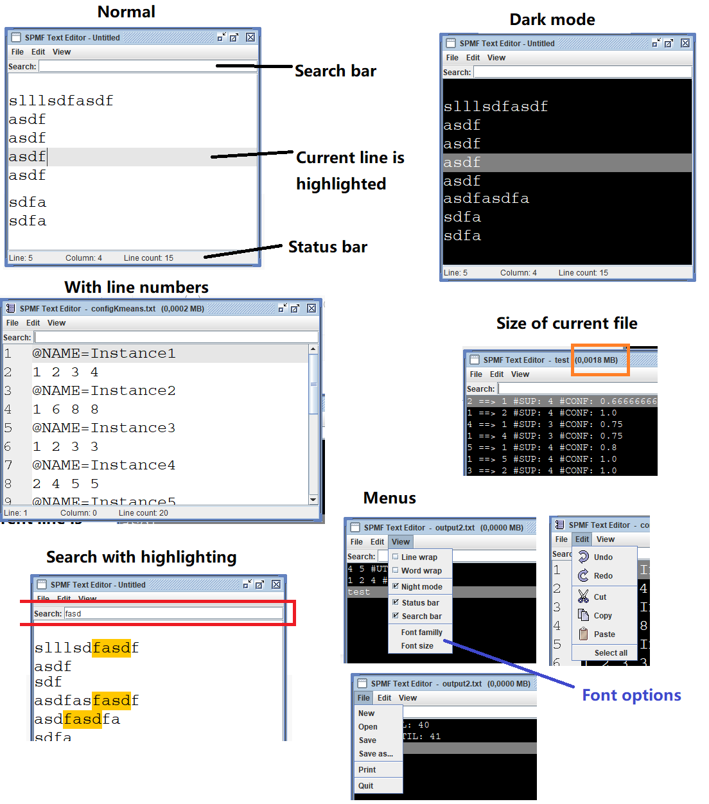

Open a text file using the SPMF text editor (SPMF documentation)
This example explains how to open a text file using the SPMF text editor .
How to run this example?
- If you are using the graphical interface of SPMF, (1) choose the "Open_text_file_with_SPMF_text_editor" algorithm, (2) choose a text file as input file (.txt), and then (3) click "Run algorithm".
- If you want to execute this example from the command
line, then do as follow. For example, to open a file calle "moby_fragment.txt", this command can be run:
java -jar spmf.jar run Open_text_file_with_SPMF_text_editor moby_fragment.txt
in a folder containing spmf.jar and the input file that you want to open.
What is this tool?
The SPMF text editor is a simple text editor that can be used to open text files. It is lightweight and designed to open files that can be loaded completely in memory. It was designed especially for displaying the output of algorithms that are run from SPMF but can be used for other things as well.
Here is a screenshot of the text editor in version 2.58 of SPMF, which shows some of the main features that it offers. Note that this might change with improvements in future versions.
